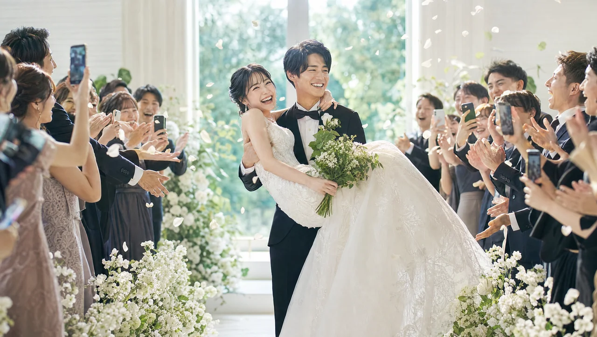

BRIDAL
仕事も式準備も諦めない。
忙しい花嫁のための
週1〜2回ブライダルトレーニング術

SUMMARY
忙しくても、週1〜2回×1回60分のパーソナルと食事指導を組み合わせれば、仕事も式準備も止めずにブライダルダイエットを両立できます。毎日通う必要はありません。NEXUSは全店8:00〜23:00・手ぶらOK・完全個室なので、出勤前や仕事帰りのすきま時間を使えます。全国71店舗で受付中。※効果には個人差があります。
式準備で、時間はどんどん消えていく
結婚式準備は、想像以上に時間を奪います。仕事と両立しながらだと、自分の体づくりは後回しになりがちです。会場との打ち合わせ、招待状、席次、衣装合わせ、演出の決定——やることは次々に増えます。そこに仕事が重なれば、ジムに毎日通うような計画は、そもそも現実的ではありません。
だからこそ必要なのは、「毎日やる」前提を捨てて、少ない回数で結果につなげる設計です。忙しい人ほど、独学で頑張るより、限られた時間を効率よく使えるパーソナルが向いています。
自己流のダイエットが続かない最大の理由は、「何をどれだけやればいいか分からない」まま始めてしまうこと。忙しいと、調べる時間も、メニューを考える時間もありません。パーソナルなら、その日行くだけでトレーナーが最適なメニューを用意してくれます。考える手間がゼロになる——これは、時間のない花嫁にとって想像以上に大きなメリットです。限られた時間を「迷い」で消費しなくて済みます。
毎日やらなくていい理由
ブライダルの体づくりは、毎日やる必要はありません。週1〜2回でも、正しく積み重ねれば十分に取り組めます。大切なのは頻度よりも継続と質。プロの指導のもとで週1〜2回、狙った部位に効かせるほうが、自己流で毎日やって続かないより結果につながりやすいのです。
NEXUSは1回60分のマンツーマン。トレーナーがその日のあなたの状態に合わせてメニューを組むため、短い時間でも中身の濃いトレーニングになります。※効果には個人差があります。

出勤前・仕事帰りのモデルスケジュール
全店8:00〜23:00で営業しているため、出勤前でも仕事帰りでも、生活リズムに合わせて通えます。
朝型プラン
出勤前の8:00〜9:00に60分。1日のはじめに体を動かし、その後は仕事と式準備に集中する、という使い方です。
夜型プラン
仕事帰りの20:00〜22:00に60分。残業があっても、23:00まで開いているので予定を合わせやすいのが利点です。
手ぶらでOKなので、ウェアやシューズを持ち歩く必要もありません。仕事バッグひとつで立ち寄れます。
大切なのは、自分の生活リズムに合う時間帯を最初に決めてしまうこと。「朝が得意なら朝、夜のほうが続くなら夜」と固定してしまえば、毎回いつ行くか悩まずに済みます。曜日と時間をあらかじめ予約枠として押さえておくと、式準備の予定が入っても、その枠を軸にスケジュールを組めます。通う時間が生活の一部になれば、忙しさの波に流されにくくなります。逆に「空いた時間ができたら行こう」という考え方だと、忙しい時期にはその時間が永遠にやってきません。先に枠を確保して、そこに他の予定を寄せていくほうが、結果的にきちんと通えます。
挙式日から逆算する短期集中プログラム
ブライダル集中プランの料金を見る →手ぶら・完全個室が「続く」理由
忙しい人が続けられるかどうかは、通うまでのハードルの低さで決まります。手ぶらOKなら、荷物の準備という手間がなくなります。完全個室なら、人目を気にせず、メイクや服装を気にせずに通えます。この「面倒がない」ことが、忙しい時期に通い続けられる大きな理由です。
さらにトレーナーがお身体に触れないノータッチ指導なので、初めての方でも安心。女性会員が約85%と多く、同じ立場の花嫁が多く通っているのも、続けやすさにつながっています。
忙しい時期は、心の余裕もなくなりがちです。式準備のストレスで、気持ちが張り詰めてしまう花嫁も少なくありません。完全個室で自分だけの時間に集中できるトレーニングは、体を整えるだけでなく、頭を切り替えるリフレッシュの時間にもなります。「体を動かしたら気持ちが軽くなった」という声も多く、忙しい花嫁にとっては、続ける理由が一つ増えることになります。
打ち合わせと両立する1週間の例
週1〜2回のトレーニングは、式準備の予定に組み込んでしまえば無理なく回せます。たとえば、平日の仕事帰りに1回、休日の会場打ち合わせの前後にもう1回——というように、既にある予定に紐づけると忘れにくくなります。食事指導は写真を送るだけなので、通わない日も続けられます。忙しい花嫁にとって、この「通わない日も進められる」仕組みは大きな支えになります。トレーニングに来られる回数が限られていても、日々の食事を整え続けることで、体づくりは着実に前へ進みます。ジムに行く時間と、それ以外の時間の両方をうまく使うことが、時間のない中で結果につなげるいちばんの近道です。
NEXUSのブライダル集中プランは、60分24回＋食事指導プレミアム付きで192,000円（税込）〜。挙式日から逆算し、あなたの多忙なスケジュールに合わせて頻度を設計します。全国71店舗すべてで同一内容です。※効果には個人差があります。
忙しい時期こそ、「完璧を目指さない」ことも大切です。予定通りに通えない週があっても、翌週にリズムを戻せば問題ありません。大切なのは、途中で完全にやめてしまわないこと。週1回でも通い続けていれば、体づくりは前に進みます。トレーナーがあなたの状況を把握しているので、忙しさの波に合わせてメニューや頻度を調整できます。ひとりで抱え込まず、プロに頼りながら、式の日まで無理なく走りきりましょう。
まとめ｜忙しくても、両立できる
週1〜2回×60分のパーソナルと食事指導なら、仕事も式準備も止めずにブライダルダイエットを両立できます。毎日やる必要はありません。
時間がないからと諦める前に、まずは無料体験で、あなたのスケジュールに合う通い方を相談してみてください。仕事も式準備も、そして自分の体づくりも——全部を大切にしたい花嫁を、NEXUSは現実的な形で応援します。忙しさは、諦める理由ではなく、効率よく取り組む理由に変えられます。あなたのペースで、当日の自分に自信を持てるように準備していきましょう。
料金・回数・期間の目安をチェック
ブライダル集中プランの料金を見る →FAQ
よくある質問
Q仕事が忙しく、週1回しか通えなさそうです。効果はありますか？＋
Q仕事帰りの遅い時間でも通えますか？＋
Q式の打ち合わせと重なって通えない週もありそうです。＋
忙しくても、諦めなくていい。
挙式日までの残り日数に合わせて、あなた専用のプランをご提案します。
※無理な勧誘は一切ありません。
本記事で紹介するブライダルボディメイクの成果には個人差があります。掲載の画像はサービス内容をわかりやすくお伝えするためのイメージです。実際のプランは無料体験時のカウンセリングで、お一人おひとりの体調・目標・挙式日に合わせてご提案します。